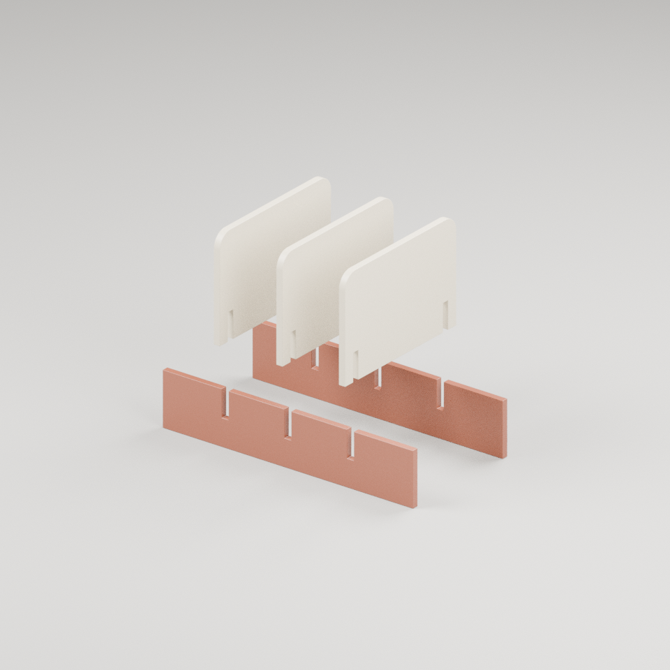
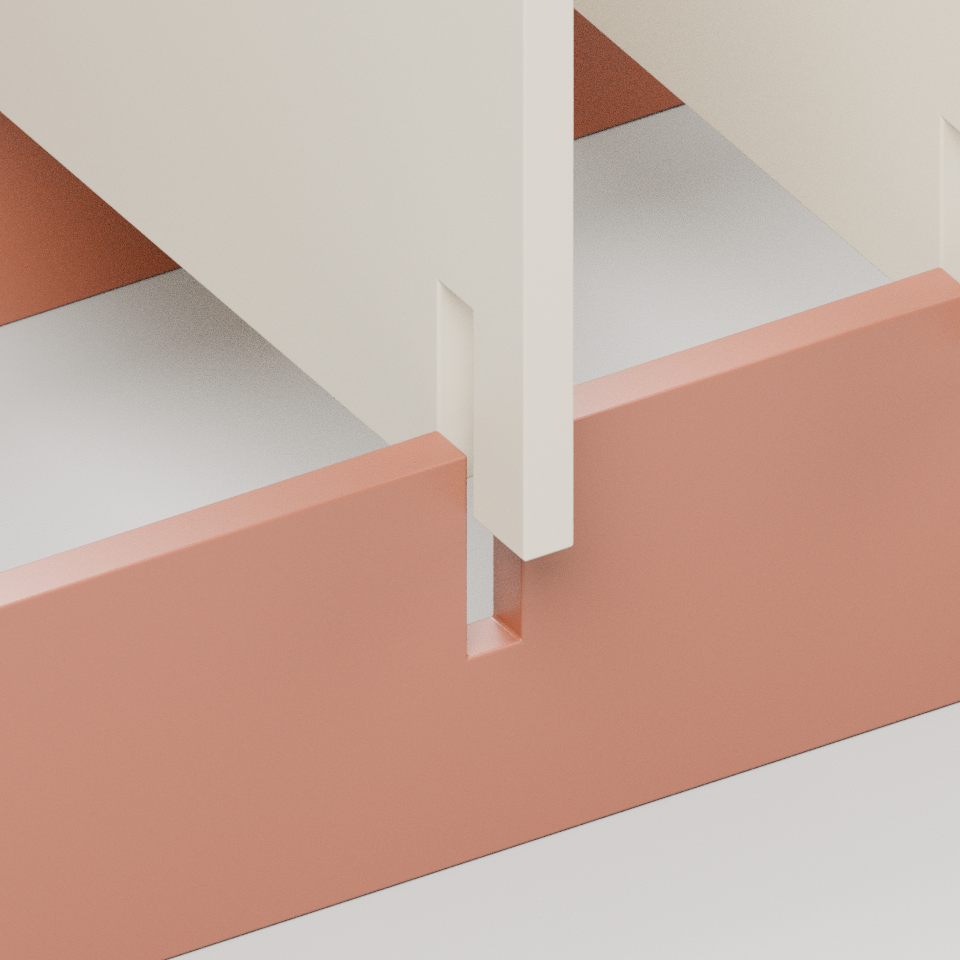
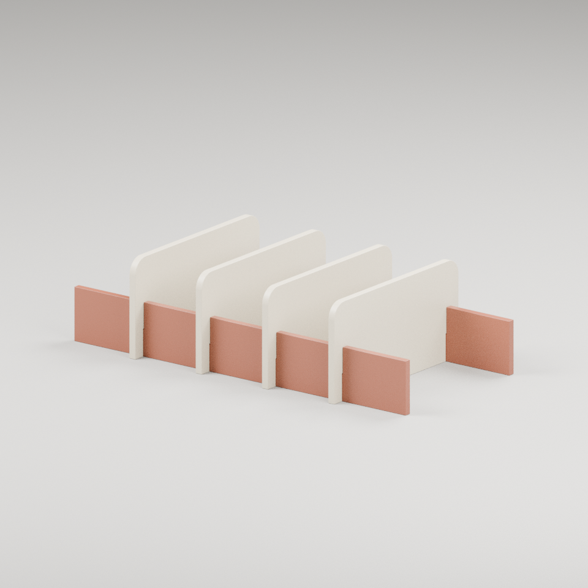
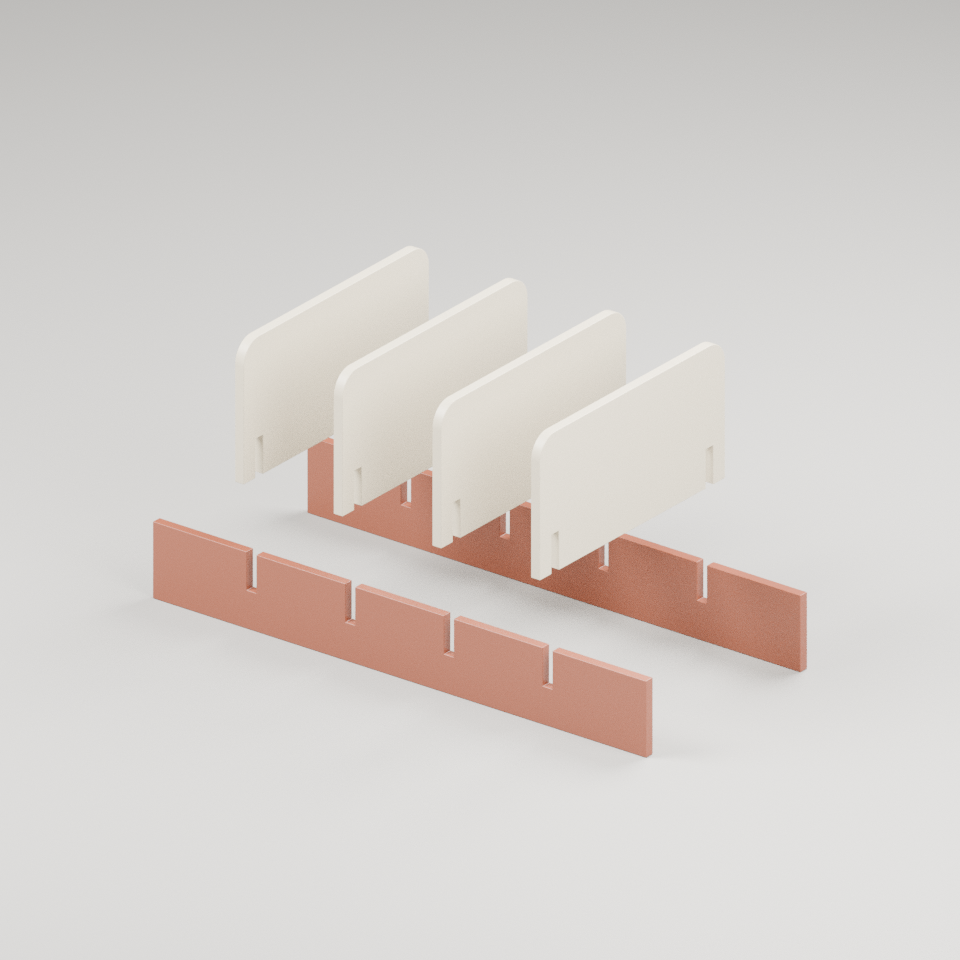
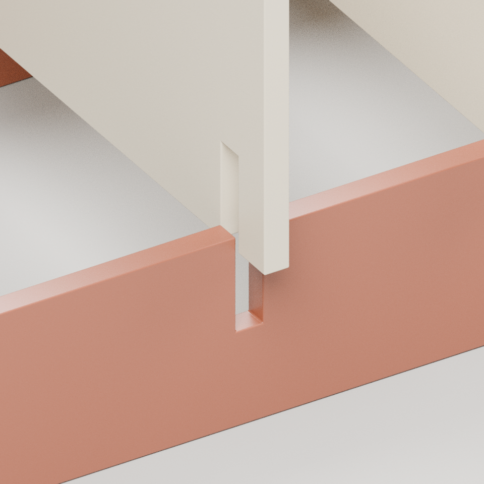
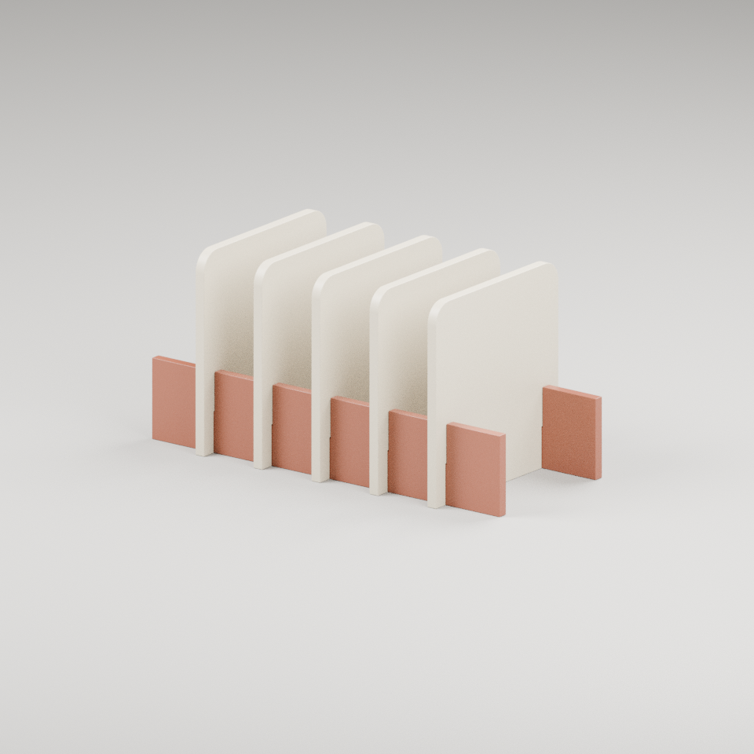
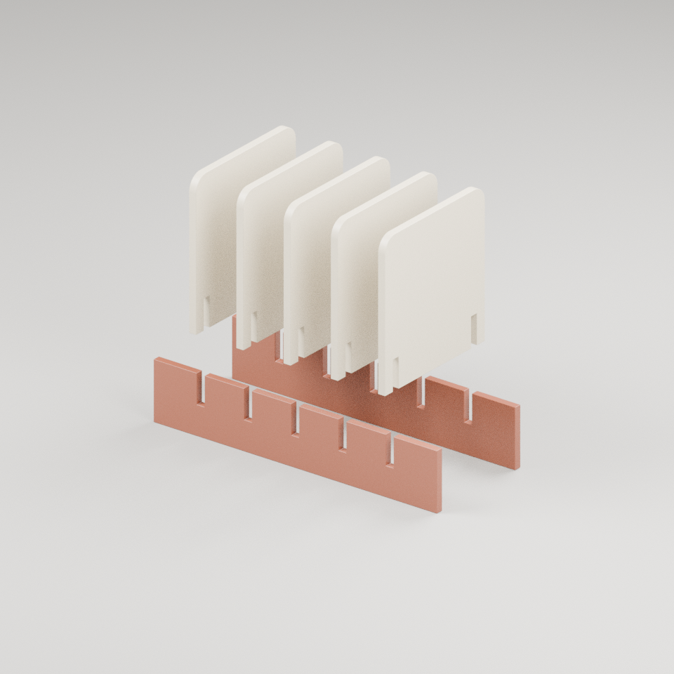
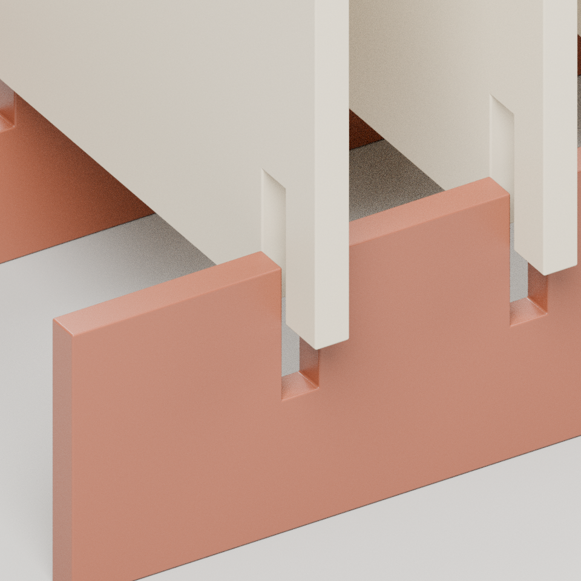

先分清两类板
纵轨沿长度方向延伸；横隔板跨过两根纵轨。底部开放，不存在一块封闭托盘底面。三种变体改变比例与隔板数量，而不只换色。
SLOT / 栖格 · AN ASSEMBLY READER
两根纵轨，一组横隔板。不是把物件藏进盒子，而是让纸册在桌面形成秩序。这里研究真实厚板的互补槽口，以及换一种比例后仍然成立的几何条件。
当前静态图版：栖格 / SLOT。无脚本时请在下方展开其他几何。

两根纵轨与 3 块横隔板。开放底部，用于纸册直立陈列的数字概念；不是零碎收纳盒。
打开真实渲染原图 ↗
横隔板竖直抽离的静态示意。这个画面本身不能证明连续装配轨迹、制造公差或稳定性。
打开真实渲染原图 ↗
接点抬升静态示意：纵轨上开槽，横隔板下开槽；名义槽宽 8.6 mm。接点机位局部定位，不用于跨款尺寸比较。
打开真实渲染原图 ↗CONNECTION / 先读关系，再读数字
这些是模型的几何组织方式，不是已经通过实物试验的装配说明。
纵轨沿长度方向延伸；横隔板跨过两根纵轨。底部开放，不存在一块封闭托盘底面。三种变体改变比例与隔板数量，而不只换色。
纵轨从顶部开槽，横隔板从底部开槽；它们在中部互补相遇。槽宽根据对穿板厚加名义间隙生成，而不是把两张实心板直接穿在一起。
页面展示名义总侧隙，不能误读为单侧间隙或制造许可。倒角会改变局部边界，必须结合导出几何、接点近景和检查报告看实际结果。
STATIC ATLAS / 无脚本也完整
展开每组即可阅读实际图与对应数字。整体图固定摄影条件；接点图按局部位置取景。世界外包尺寸由原生模型世界坐标记录计算，不把纵轨间距误写为器物总宽。
两根纵轨与 3 块横隔板。开放底部，用于纸册直立陈列的数字概念；不是零碎收纳盒。
打开真实渲染原图 ↗横隔板竖直抽离的静态示意。这个画面本身不能证明连续装配轨迹、制造公差或稳定性。
打开真实渲染原图 ↗接点抬升静态示意：纵轨上开槽，横隔板下开槽；名义槽宽 8.6 mm。接点机位局部定位，不用于跨款尺寸比较。
打开真实渲染原图 ↗
两根纵轨与 4 块横隔板。开放底部，用于纸册直立陈列的数字概念；不是零碎收纳盒。
打开真实渲染原图 ↗
横隔板竖直抽离的静态示意。这个画面本身不能证明连续装配轨迹、制造公差或稳定性。
打开真实渲染原图 ↗
接点抬升静态示意：纵轨上开槽，横隔板下开槽；名义槽宽 8.6 mm。接点机位局部定位，不用于跨款尺寸比较。
打开真实渲染原图 ↗
两根纵轨与 5 块横隔板。开放底部，用于纸册直立陈列的数字概念；不是零碎收纳盒。
打开真实渲染原图 ↗
横隔板竖直抽离的静态示意。这个画面本身不能证明连续装配轨迹、制造公差或稳定性。
打开真实渲染原图 ↗
接点抬升静态示意：纵轨上开槽，横隔板下开槽；名义槽宽 9.7 mm。接点机位局部定位，不用于跨款尺寸比较。
打开真实渲染原图 ↗EVIDENCE / 结论的边界
实际模型的三联图、构件数、板厚与槽宽来自同一冻结资产。切换时三图全部解码后才替换图文，失败保留旧组；首次失败则明确没有已确认完整组。
静态分解图只解释构件关系。任何有限运动样本检查须按模型原报告的对象、方向、采样与局限理解，不推导任意装配次序。
没有验证实体材料、承载、抗倾覆、摩擦、胶接、加工公差或使用安全。基面需按每件实际最低点校正；仅写名义 z=0 不能证明倒角后的真实位置。实际校正量、上下界与中部间隙以最终元数据和检查报告为准。
CPU 图与代码测试不等于实时 GPU 闪烁测试。云浏览器 GL 禁用；真实 GPU 与 iPhone 尚未验收。
REPRODUCE / 把条件留下来
原模型包保留在 model/，网页未重导出或压损模型。有限变体只证明这些样本能复现同一语言，不证明连续参数全集。